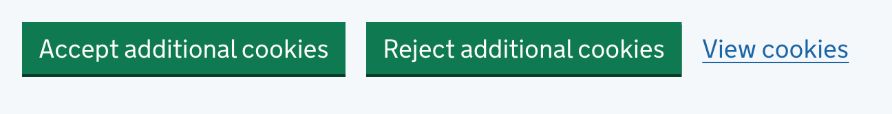
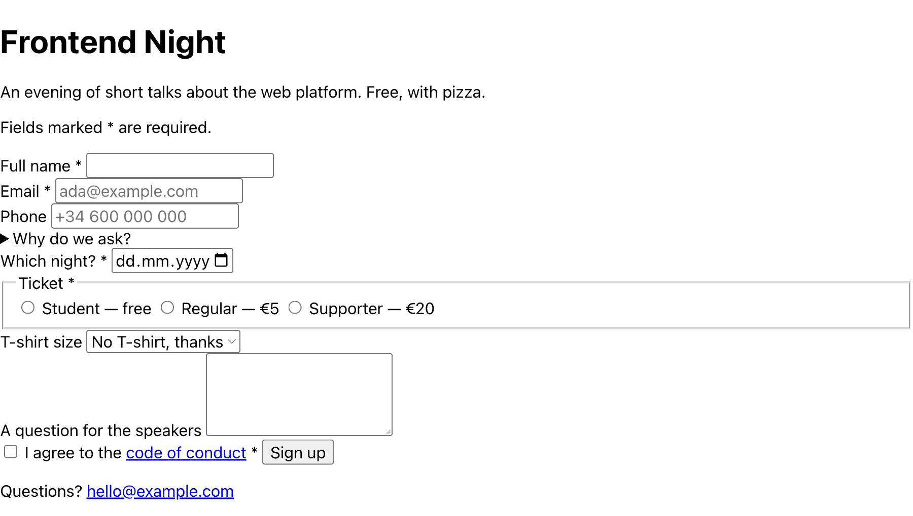

Interactive HTML
The keyboard test, links and buttons, forms, focus.
Put your mouse away
For the next 15 minutes you use the web with the keyboard only. First, make sure your browser lets you.
Turn on keyboard navigation
| Safari | Settings → Advanced → Press Tab to highlight each item on a webpage |
|---|---|
| Firefox | Settings → Accessibility → Use the tab key to move focus between form controls and links |
Without this, Tab on a Mac skips every link.
The keys
| Tab / Shift+Tab | Next / previous interactive element |
|---|---|
| Enter | Follow a link, press a button, submit a form |
| Space | Press a button, toggle a checkbox |
| Arrows | Move inside a radio group or a select |
| Esc | Close a menu or a dialog |
Unplug the mouse
- gov.uk: when does someone born 15/10/1966 get a free bus pass? (hint: it's in the pension calculator)
- renfe.com: find a train Barcelona → Madrid next Friday
- ikea.com: put a desk under €100 in the cart, then open the cart
- idealista.com: list apartments for rent in Barcelona and open the 3rd one
Note as you go: what Tab couldn't reach, where Tab jumped around, where you got stuck, where the focus ring vanished.
What did Tab do?
- What did Tab stop on?
- What did it skip?
- Where did it jump around?
- Where were you stuck?
- Where did the focus ring vanish?
Everything Tab stopped on is an interactive element
The browser knows it's interactive because the HTML says so.
Tab stops on these
| <a href> | A link to another page |
|---|---|
| <button> | An action on this page |
| <input> <select> <textarea> | Form controls |
| <summary> | Opens and closes a <details> |
Try it: this is a <details>
Enter opens and closes it. No JavaScript involved.
A div is not a button
<div class="btn" onclick="buy()">Buy</div> <button type="button" onclick="buy()">Buy</button>
- The
divhas no Tab stop, ignores Enter and Space, and a screen reader reads only "Buy" - The
buttongets all three for free
Link or button?
<a href> goes somewhere
<a href="/cart">Cart</a>
- Represents a hyperlink
- Moves to the page set in
href - Adds the page to the browser history
- Enter to follow the link
<button> does something
<button>Add to cart</button>
- Performs an action on the same page
- The
typeattribute defines its behavior - Default
typeissubmit - Enter or Space to press
Both, side by side

- Accept and Reject are
<button>s: they change a setting, you stay on the page - View cookies is an
<a href>: it opens another page
Looks like a button, is a link
Start now opens a new page, so gov.uk made it a link. The button look is only CSS.
Pick the element by what it does, not by how it looks.
Test: the URL changes → <a href>. Something happens on this page → <button>.
Most interactive elements live in forms
You style this signup form at the end of today. First, what makes its HTML right.
The gov.uk calculator you used is built the same way.

Every input needs a name
<label for="email">Email</label>
<input id="email" name="email"
type="email" autocomplete="email"
required>
for↔idconnects them: clicking the label focuses the input- A screen reader says the label when the input gets focus
nameis the key the form sends
A placeholder is not a label
- It disappears as soon as you type
- Light grey by default: low contrast
- Screen readers don't reliably read it
- Use it for an example value, never for the name
<label for="phone">Phone</label>
<input id="phone" type="tel"
placeholder="+34 600 000 000">
The type does the work
| @ on the phone keyboard, format check | |
| tel | Number pad |
| number | Spinner, min / max / step |
| date | Native date picker |
| required | Can't submit it empty |
| autocomplete | Autofill: name, email, tel, street-address… |
A dropdown comes ready-made
<label for="city">City</label> <select id="city" name="city"> <option>Barcelona</option> <option>Madrid</option> </select>
Arrows move through the options, typing jumps to a match. No script. MDN: <select>
Group related choices
<fieldset><legend>Ticket</legend>
<label>
<input type="radio" name="ticket"> Student
</label>
<label>…</label>
</fieldset>
What the group gives you
- Same
namemeans one group: arrows move inside it, Tab jumps past it - A screen reader says: "Ticket, group. Student, radio button, 1 of 2"
Forms work without JavaScript
<form action="" method="get"> … <button>Sign up</button> </form>
- Submit it and look at the URL:
?email=ada%40example.com&ticket=student - The gov.uk calculator works this way: your answers end up in the URL
- Gotcha: a
<button>inside a form istype="submit"by default
Focus is where the keyboard is
| Tab jumped around | Order: where Tab goes next |
|---|---|
| Stuck in a banner | Trapped: where Tab is allowed to go |
| Ring vanished | Visible: whether you can see it |
Focus order is source order
- Tab follows the HTML, not the visual layout
tabindex="0": add to the order, in source positiontabindex="-1": focusable by script onlytabindex="1"and up: don't. It breaks everyone's order
More on October 5 with Glafira Zhur.
A real modal keeps focus
A <dialog> opened with showModal():
- Moves focus inside, and Tab stays inside
- Closes on Esc, and focus goes back where it was
A <div> banner does none of this unless someone writes it in JavaScript.
This one is CSS
Back to the signup form. Labels, a fieldset, real buttons: the HTML is right. It still looks like 1995, and one line of its CSS hides the focus ring.
The rest of today is CSS. At the end, you style this form.
Recap
- Tab stops only on interactive elements: links, buttons, form controls,
<summary> - A link goes somewhere, a button does something. Pick by what it does, not how it looks
- Every input needs a label; a placeholder is not one
- The input's
typegives the right keyboard, validation and autofill for free - Focus follows source order; a
<dialog>keeps it inside - The focus ring is CSS. That's next